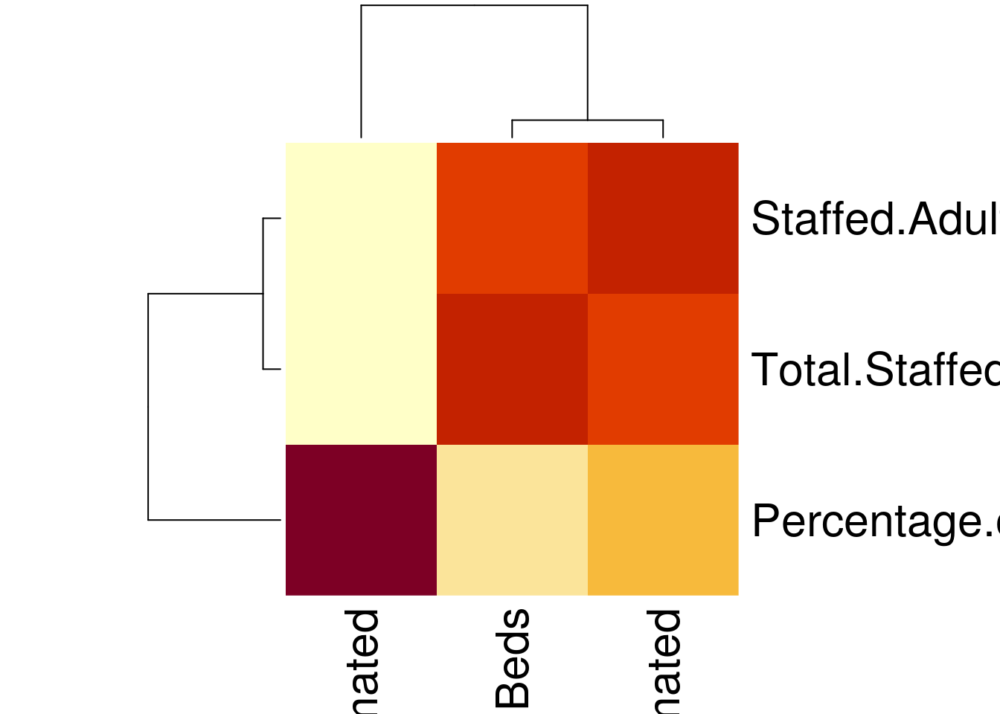
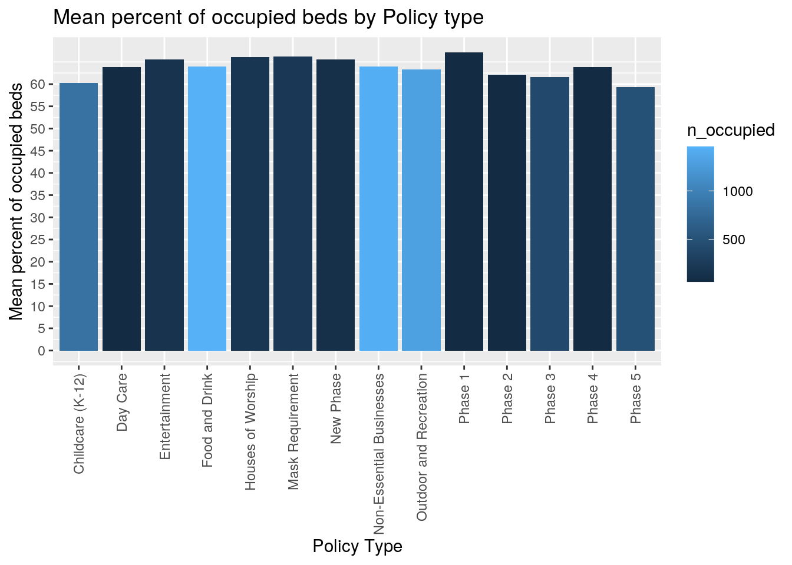
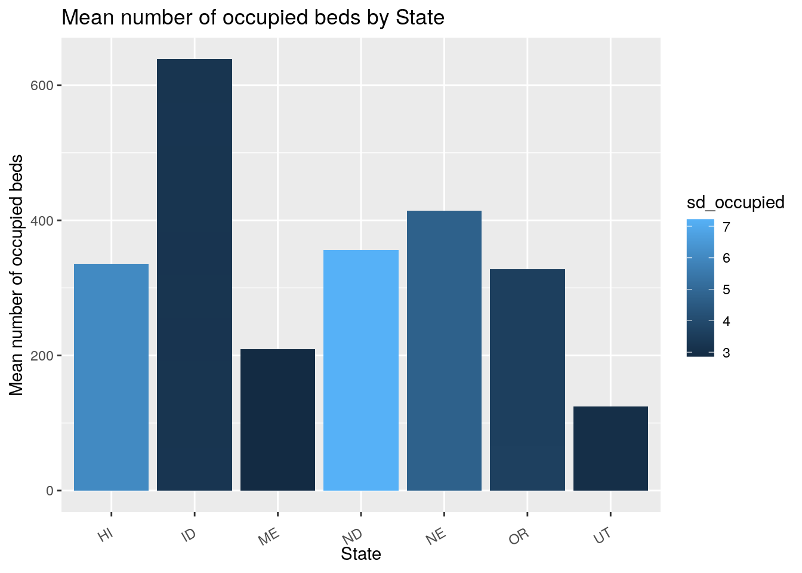
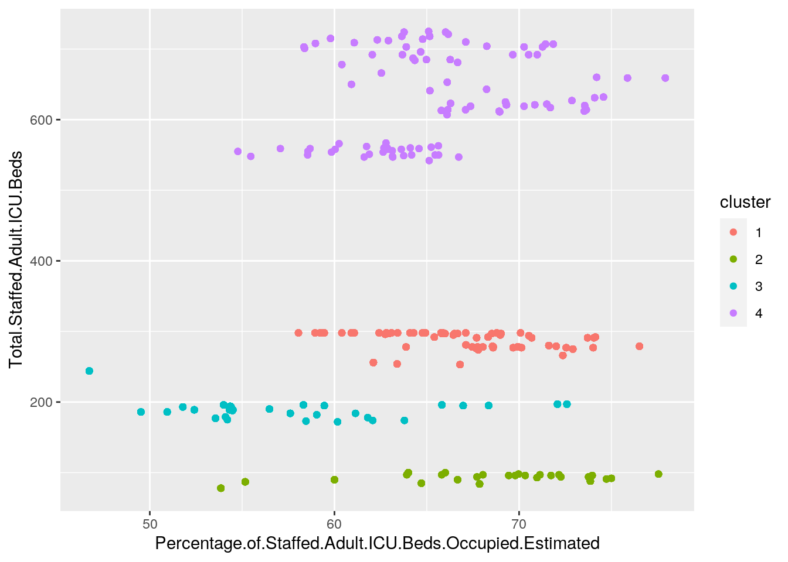

The datasets I have chosen are from health.gov and are related to the ongoing pandemic. COVID-19 has been the topic of all our attention for several months now, and I found it appropriate that I'd analyze some available data surrounding it, to potentially observe some of the trends for myself. One of the datasets details the amount and percentage of occupied ICU beds across counties of different states, and the other dataset details the COVID-19 safety policies that are in place in the area. I expected to see that those areas with the strictest policies would have a lower percentage of occupied ICU beds.
library(tidyverse)
covid_icu_beds <- read.csv("covid.icu.beds.csv")
covid_policies <- read.csv("covid.policies.csv")
fulldata <- full_join(covid_icu_beds, covid_policies, by = c(state = "state_id"))
fulldata$Staffed.Adult.ICU.Beds.Occupied.Estimated <- as.numeric(as.character(fulldata$Staffed.Adult.ICU.Beds.Occupied.Estimated))
fulldata$Total.Staffed.Adult.ICU.Beds <- as.numeric(as.character(fulldata$Total.Staffed.Adult.ICU.Beds))
fulldata$Percentage.of.Staffed.Adult.ICU.Beds.Occupied.Estimated <- as.numeric(as.character(fulldata$Percentage.of.Staffed.Adult.ICU.Beds.Occupied.Estimated))Chose to utilize the full join so as to preserve the most amount of cases. However, in doing so this introduced a lot of NA's into the dataset, which I eventually removed. The join variable I used was state, and this was because it was their main variable in common.
# removing nas and unnecessary columns
covid.nas <- fulldata %>% na.omit() %>% select(-4, -5, -7, -8,
-10, -11, -18, -19)
# summary stats
covid.by.state.policy <- covid.nas %>% group_by(state, policy_type) %>%
summarize(mean_occupied = mean(Percentage.of.Staffed.Adult.ICU.Beds.Occupied.Estimated),
sd_occupied = sd(Percentage.of.Staffed.Adult.ICU.Beds.Occupied.Estimated),
n_occupied = n())
head(covid.by.state.policy)## # A tibble: 6 x 5
## # Groups: state [2]
## state policy_type mean_occupied sd_occupied n_occupied
## <fct> <fct> <dbl> <dbl> <int>
## 1 HI Entertainment 67.2 6.03 62
## 2 HI Mask Requirement 67.2 6.03 62
## 3 HI Non-Essential Businesses 67.2 6.03 62
## 4 HI Outdoor and Recreation 67.2 6.03 62
## 5 HI Phase 1 67.2 6.03 62
## 6 ID Childcare (K-12) 63.8 3.25 31covid.by.policy <- covid.nas %>% group_by(policy_type) %>% summarize(mean_occupied = mean(Percentage.of.Staffed.Adult.ICU.Beds.Occupied.Estimated),
sd_occupied = sd(Percentage.of.Staffed.Adult.ICU.Beds.Occupied.Estimated),
n_occupied = n(), max(mean_occupied), min(mean_occupied))
covid.nas %>% summarize(max_occupied_beds = max(Total.Staffed.Adult.ICU.Beds),
min_occupied_beds = min(Total.Staffed.Adult.ICU.Beds))## max_occupied_beds min_occupied_beds
## 1 725 78# Using more Dplyr functions
covid.by.state.policy %>% select(state, mean_occupied) %>% arrange(-mean_occupied)## # A tibble: 37 x 2
## # Groups: state [7]
## state mean_occupied
## <fct> <dbl>
## 1 ME 69.9
## 2 ME 69.9
## 3 ME 69.9
## 4 NE 69.0
## 5 NE 69.0
## 6 NE 69.0
## 7 NE 69.0
## 8 NE 69.0
## 9 NE 69.0
## 10 HI 67.2
## # … with 27 more rowscovid.nas %>% filter(policy_level == "county") %>% mutate(unoccupied_beds = Total.Staffed.Adult.ICU.Beds -
Staffed.Adult.ICU.Beds.Occupied.Estimated) %>% select(state,
Staffed.Adult.ICU.Beds.Occupied.Estimated, policy_type, unoccupied_beds)## state Staffed.Adult.ICU.Beds.Occupied.Estimated policy_type
## 1 ID 187 Day Care
## 2 ID 187 Entertainment
## 3 ID 187 Outdoor and Recreation
## 4 ID 187 Phase 4
## 5 ID 187 Day Care
## 6 ID 187 Entertainment
## 7 ID 187 Mask Requirement
## 8 ID 187 Non-Essential Businesses
## 9 ID 187 Phase 4
## 10 ID 187 Outdoor and Recreation
## 11 ID 187 Food and Drink
## 12 ID 187 Non-Essential Businesses
## 13 ID 187 Childcare (K-12)
## 14 ID 187 Houses of Worship
## 15 ID 187 Mask Requirement
## 16 ID 187 Food and Drink
## 17 ID 187 Food and Drink
## 18 ID 187 Houses of Worship
## 19 ID 187 Mask Requirement
## 20 ID 187 Phase 3
## 21 ID 198 Day Care
## 22 ID 198 Entertainment
## 23 ID 198 Outdoor and Recreation
## 24 ID 198 Phase 4
## 25 ID 198 Day Care
## unoccupied_beds
## 1 110
## 2 110
## 3 110
## 4 110
## 5 110
## 6 110
## 7 110
## 8 110
## 9 110
## 10 110
## 11 110
## 12 110
## 13 110
## 14 110
## 15 110
## 16 110
## 17 110
## 18 110
## 19 110
## 20 110
## 21 99
## 22 99
## 23 99
## 24 99
## 25 99
## [ reached 'max' / getOption("max.print") -- omitted 6826 rows ]My first set of summary statistics was the mean, standard deviation, and n of percentage of occupied beds, all grouped by state and policy type. The next set of summary statistics were the same as the prior one, except grouped only by policy type. Next the max and min amounts of total ICU beds were found, and then the same were found for the amount of occupied ICU beds. Finally, utilized additional dplyr functions like filter to find county level policies, determine how many unoccupied beds there with mutate, and select and arrange to display the ranking by state of percent occupied ICU beds.
# Practice tidying up
covid.longer <- covid.by.state.policy %>% pivot_longer(c(3:5),
names_to = "stat", values_to = "value")
head(covid.longer)## # A tibble: 6 x 4
## # Groups: state [1]
## state policy_type stat value
## <fct> <fct> <chr> <dbl>
## 1 HI Entertainment mean_occupied 67.2
## 2 HI Entertainment sd_occupied 6.03
## 3 HI Entertainment n_occupied 62
## 4 HI Mask Requirement mean_occupied 67.2
## 5 HI Mask Requirement sd_occupied 6.03
## 6 HI Mask Requirement n_occupied 62covid.wider <- covid.longer %>% pivot_wider(names_from = "stat",
values_from = "value")My data was already fairly tidy, so chose to simply practice some of the tidying functions on some of my summary stats. Chose to pivot 3 different summary stats into one column, and then pivot them wider to undo that.
# visualizations
cordata <- covid.nas %>% select(c(3:5))
cormat <- signif(cor(cordata), 2)
heatmap(cormat)
library(ggplot2)
ggplot(data = covid.by.policy, mapping = aes(x = policy_type,
y = mean_occupied, fill = n_occupied)) + geom_bar(stat = "summary") +
labs(title = "Mean percent of occupied beds by Policy type",
x = "Policy Type", y = "Mean percent of occupied beds") +
theme(axis.text.x = element_text(angle = 90, vjust = 0.5,
hjust = 1)) + scale_y_continuous("Mean percent of occupied beds",
breaks = seq(0, 60, by = 5))
covid.by.state <- covid.nas %>% group_by(covid.nas$state) %>%
summarize(mean_occupied = mean(Percentage.of.Staffed.Adult.ICU.Beds.Occupied.Estimated),
sd_occupied = sd(Percentage.of.Staffed.Adult.ICU.Beds.Occupied.Estimated),
n_occupied = n(), max(mean_occupied), min(mean_occupied))
distinct.states <- covid.by.state %>% distinct()
ggplot(data = covid.by.state.policy, mapping = aes(x = state,
y = mean_occupied, fill = sd_occupied)) + geom_histogram(stat = "identity") +
theme(axis.text.x = element_text(angle = 30, vjust = 0.5,
hjust = 1)) + labs(title = "Mean number of occupied beds by State",
x = "State", y = "Mean number of occupied beds")
For the correlation heatmap, strong corrleations are deep red/burgundy, weaker ones are orange, and the weakest are yellow.
The bar plot of mean percent of occupied beds across policy types shows no conclusive evidence of relationships. On the x-axis was the type of restrictive policy enacted, and on the y-axis was the mean percent of occupied ICU beds. The plot is relatively even across the board and suggests that the COVID restriction policies didn't really have a significant impact on the percentage of occupied ICU beds. This was actually a suprising result, as it would make sense for the level of activity to correlate with the amount of COVID cases and thus ICU beds being used.
The next plot was a histogram mean amount of occupied ICU beds in each hospital by State. It should also be noted that the histogram was colored by the standard deviation, with lighter blues having the most deviation. This histogram has much clearer results than the last graph, and it can be observed that the state with the highest average amount of occupied ICU beds is Idaho. The state with the seemgingly lowest average is Utah.
# pam
library(cluster)
covid.pam <- covid.nas %>% select(c(3:5)) %>% pam(k = 4)
covid.pam## Medoids:
## ID Staffed.Adult.ICU.Beds.Occupied.Estimated
## 27024 1268 191
## 41656 2557 111
## 64821 6156 120
## 55305 4714 439
## Percentage.of.Staffed.Adult.ICU.Beds.Occupied.Estimated
## 27024 68.56
## 41656 60.00
## 64821 56.48
## 55305 68.24
## Total.Staffed.Adult.ICU.Beds
## 27024 279
## 41656 90
## 64821 190
## 55305 643
## Clustering vector:
## 840 844 845 848 849 850 851 852 853 854 856 857 858 862 866 867
## 1 1 1 1 1 1 1 1 1 1 1 1 1 1 1 1
## 871 872 873 874 1055 1059 1060 1063 1064 1065 1066 1067 1068 1069 1071 1072
## 1 1 1 1 1 1 1 1 1 1 1 1 1 1 1 1
## 1073 1077 1081 1082 1086 1087 1088 1089 1270 1274 1275 1278 1279 1280 1281 1282
## 1 1 1 1 1 1 1 1 1 1 1 1 1 1 1 1
## 1283 1284 1286 1287 1288 1292 1296 1297 1301 1302 1303 1304 1485 1489 1490 1493
## 1 1 1 1 1 1 1 1 1 1 1 1 1 1 1 1
## 1494 1495 1496 1497 1498 1499 1501 1502 1503 1507 1511 1512 1516 1517 1518 1519
## 1 1 1 1 1 1 1 1 1 1 1 1 1 1 1 1
## 1700 1704 1705 1708 1709 1710 1711 1712 1713 1714 1716 1717 1718 1722 1726 1727
## 1 1 1 1 1 1 1 1 1 1 1 1 1 1 1 1
## 1731 1732 1733 1734
## 1 1 1 1
## [ reached getOption("max.print") -- omitted 6751 entries ]
## Objective function:
## build swap
## 25.18204 21.44526
##
## Available components:
## [1] "medoids" "id.med" "clustering" "objective" "isolation"
## [6] "clusinfo" "silinfo" "diss" "call" "data"pam.clust <- covid.nas %>% select(c(3:5)) %>% mutate(cluster = as.factor(covid.pam$clustering))
pam.clust %>% ggplot(aes(Percentage.of.Staffed.Adult.ICU.Beds.Occupied.Estimated,
Total.Staffed.Adult.ICU.Beds, color = cluster)) + geom_point() The plot of the PAM displays 4 distinct groups. There's a group of low total amount of beds, slightly greater, medium, and high amount of total beds. However, the amount of beds seems to be main determination of clustering, as there is a significant amount of variation within the percentage of occupied ICU beds, especially in the lower clusters. There doesn't seem to be a significant relationship between the percentage of occupied ICU beds and the total amount of ICU beds. This makes sense conceptually as just because the amount of ICU beds increases, doesn't mean the relative demand for them will change.
options(tinytex.verbose = TRUE)
...